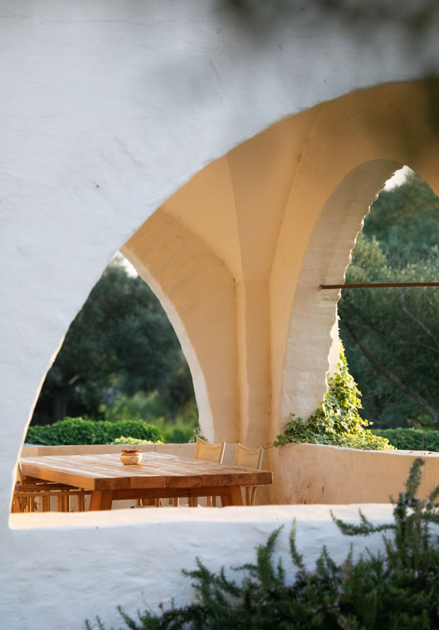
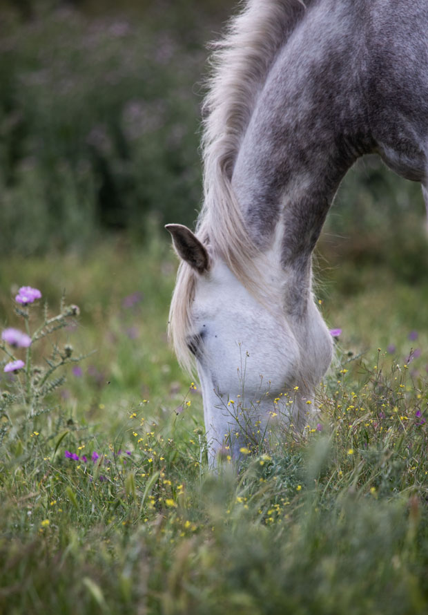
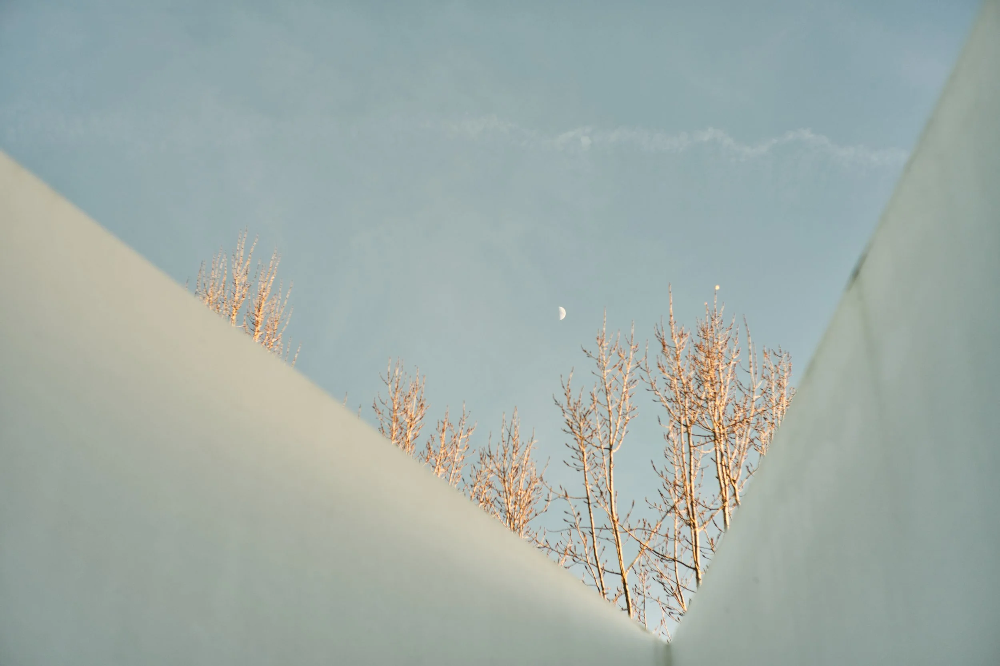
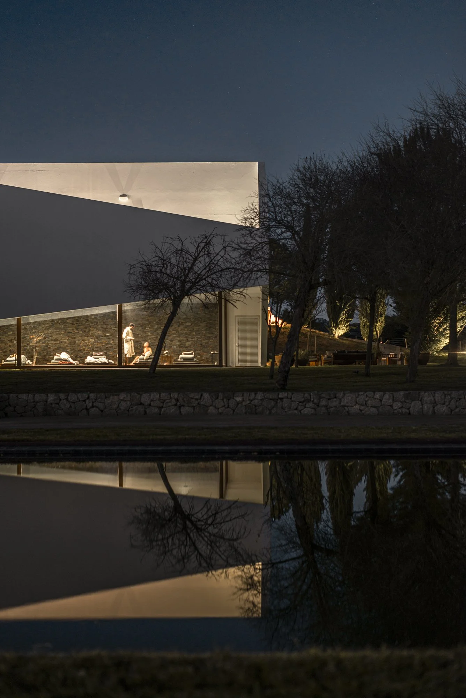

Two estates, one beautiful corner of Portugal
L'AND Vineyards is right on the way back to Lisbon. Instead of rushing back on Sunday, we stay one more night and drive to the airport from there on Monday morning.
A 200-year-old farming village, restored into one of Portugal's most celebrated hotels. Whitewashed stone, ancient olive groves, Lusitano horses grazing in the fields.
Designed by Pritzker Prize winner Eduardo Souto de Moura, every building was converted from its original purpose: an olive press became a bar, a cowshed became the restaurant, agricultural outbuildings became guest rooms. The interiors are simple: local ceramics, woven tapestries, farm-wood furniture.
What's fascinating is the change in usage. An olive press can become a living room with a bar, a cowshed can be made into a restaurant.
Eduardo Souto de Moura, Architect

22 guest rooms, 16 cottages, spa, winery, on-site restaurant
Vineyards, olive groves, ancient oaks, Neolithic menhir
780 hectares of estate to explore, and a lake just down the road.
Ride Lusitano horses across the entire estate: through vineyards, past ancient olive trees and a Neolithic menhir, to views of Monsaraz castle. Wine tasting on horseback or by carriage too.
Europe's largest artificial lake is right on the doorstep. The trail from the estate leads through open plains and ancient olive trees to the water's edge. Breathtaking light and reflections.
The estate has its own vineyards and cellar. Exclusive tastings after wandering through the vines. They also have a wine-on-horseback experience.
Take a hamper filled with local Alentejo products and find a spot on the estate with sweeping views.
On-site spa set within the restored farm buildings. Simple, earthy treatments.
The medieval hilltop village is just nearby. Cobblestone streets, castle walls, panoramic views across the Alentejo.
A sleek wine retreat where contemporary architecture dissolves into the Alentejo landscape. Only 35 suites and 9 pool villas. The ceilings open so you can sleep under the stars.
Designed by Promontorio and Marcio Kogan of Studio MK27 (the Fasano architect). The interiors are deliberately simple: black slate floors, oak wainscots, Tom Dixon lights, George Nakashima furniture. An exclusive art collection by Michael Biberstein, inspired by representations of the sky, hangs throughout.
Architecture, art, landscape, nature, local crafts, sound and scent creating an atmosphere of tranquility, where guests can feel at home.
L'AND Vineyards

Retractable bedroom ceiling. Fall asleep watching the stars.
Michelin-starred restaurant. Portuguese voyages meets Alentejo terroir.
One night, but a world to soak in. The estate sits in a south-facing valley of vineyards overlooking the medieval Montemor castle.
Six hectares of organic vineyards. Touriga Nacional, Alicante Bouschet, Syrah. Wine club tastings and cellar visits. You can even make your own wine.
The Sky Suites have retractable roofs. No light pollution. Just you, the bed, and the entire Alentejo night sky overhead.
By Austrian brand Vinoble. Grape seed and vine-based treatments. Indoor heated pool, sauna, hammam. Plus an outdoor pool in the vineyards.
Chef David Jesus. Michelin-starred. Portuguese cuisine inspired by maritime voyages. Ingredients from the estate's organic gardens and Setubal's seaport.
L'AND is just outside Montemor-o-Novo. A straight, easy morning drive to Lisbon airport for our 5PM flight.
London Heathrow Lisbon
~3h flight. Land mid-afternoon local time.
Lisbon London Heathrow
~3h flight. Evening arrival in London.
Hire car from Lisbon airport. All drives are through beautiful, quiet Alentejo countryside.
| Lisbon Barrocal | ~1h 45min |
| Barrocal L'AND | ~45min |
| L'AND Lisbon airport | ~1h |
All routes are easy motorway + countryside roads. No mountain passes. The drive itself is part of the experience: golden plains, cork oaks, hilltop villages.
Four days, warm Alentejo spring weather, two beautiful hotels. Pack light, pack right.